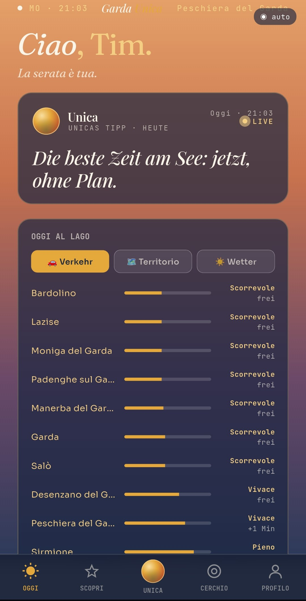
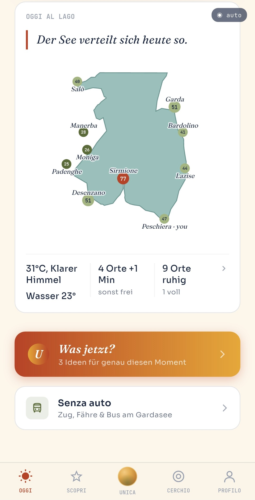
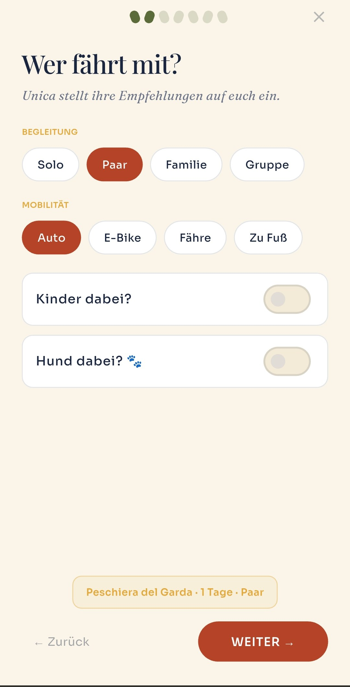
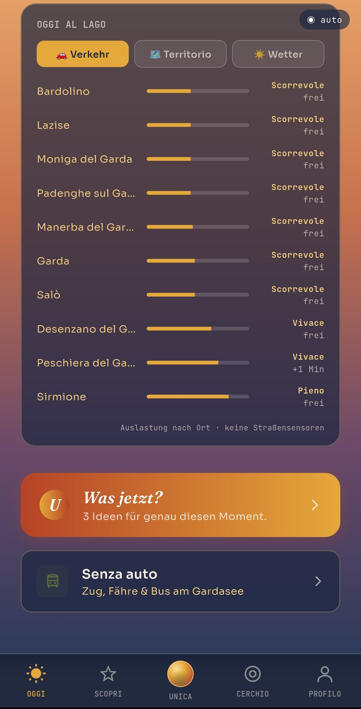
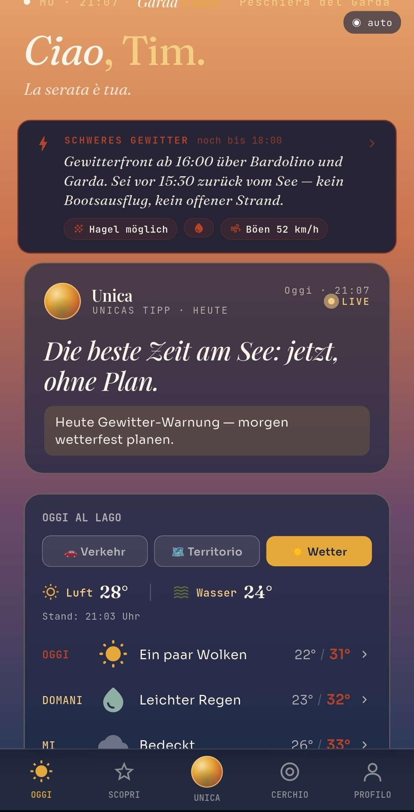
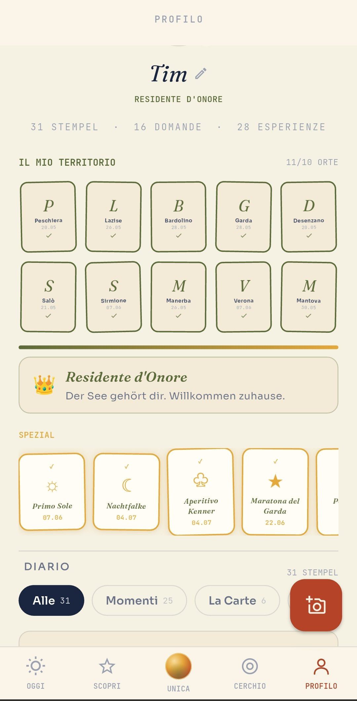
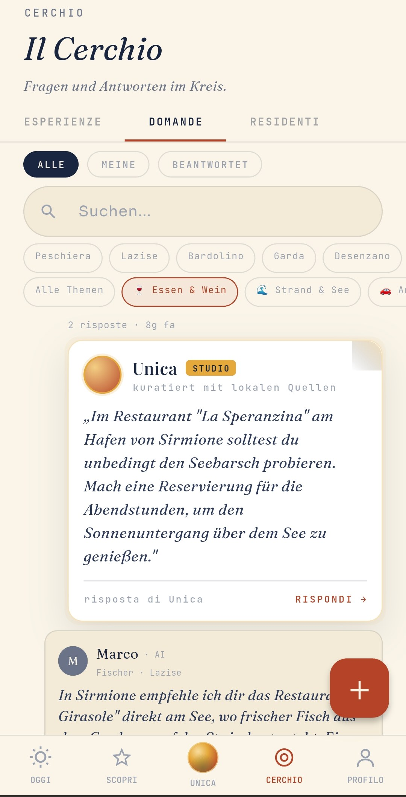

Garda Unica ist dein KI-Reisebegleiter für den südlichen Gardasee. Eine Empfehlung pro Moment — mit ehrlichen Crowd-Daten, lokalem Wissen und einem Grund, warum. Gebaut von Menschen, die hier leben.

Schlange am Castello: 200 Meter. Der Espresso am Hafen: ein Kampf um den letzten Stehplatz. So sieht „Hochsaison" aus, wenn alle derselben Empfehlung folgen.
Zwanzig Autominuten entfernt: Parkplatz direkt am Strand, stilles Ufer, dieselbe Sonne über demselben See. Nur eben ohne die Massen.

Unica kennt den Unterschied — in Echtzeit.

Familie mit Kindern? Zu zweit? Mit Hund? Frühaufsteher oder Dolce Vita? Ein kurzes, charmantes Kennenlernen statt endloser Formulare — und jede Empfehlung passt zu eurem Rhythmus.
Jeden Morgen eine Empfehlung, die zu Wetter, Wochentag und Live-Auslastung passt — mit Uhrzeit, Parkplatz-Info und dem Grund, warum genau jetzt. Keine 200 Optionen. Eine, die stimmt.

Markttag in Lazise? Die Fähre nach Salò? Der Bäcker, der sonntags offen hat? Unica antwortet wie ein Freund, der am See wohnt — aus kuratiertem lokalen Wissen, nicht aus dem Internet-Rauschen.
Gewitterfront ab 16:00? Unica sagt es dir, bevor du am Strand bist — mit konkreter Uhrzeit statt vager Wetter-App-Prosa. Nicht nur empfehlen. Wirklich aufpassen.

Mit Marco um sechs Uhr früh raus auf dem Fischerboot, wenn der See noch schläft. Solche Momente stehen in keinem Katalog — sie entstehen, weil wir die Menschen dahinter kennen. Buchbar direkt in der App, bei Partnern vor Ort, transparent gekennzeichnet.

Ein Gardasee, an dem Gäste und Einheimische denselben Sommer lieben.
Wir verteilen Tourismus intelligent: Ehrliche Live-Daten und kuratiertes lokales Wissen führen Menschen dorthin, wo der See gerade am schönsten ist — und entlasten die Orte, die Pause brauchen.
Kein Bewertungs-Ozean mit 200 Optionen. Jeder Ort, jeder Tipp ist handverlesen — von Menschen, nicht von einem Ranking-Algorithmus.
Verkehr, Auslastung, Wetter — alle 30 Minuten aktualisiert. Und was die Daten sagen, prüfen wir selbst nach. Wir wohnen hier.
Keine bezahlten Platzierungen. Wenn wir empfehlen, steht dabei, warum. Partner kennzeichnen wir transparent — und was Unica nicht sicher weiß, behauptet sie nicht.
Volle Orte werden entlastet, stille entdeckt. Weniger Parksuche, weniger Stress — und Umsatz auch dort, wo der Rummel sonst nie ankommt.
„Das weiß ich nicht sicher — und ich rate nicht." — Unica

Stell deine Frage in „Domande" — echte Locals und Unicas kuratierte Residenti antworten. Teile deine Momente als „Esperienze". Kein Forum voller Werbung, sondern ein Kreis von Menschen, die hier leben.
Garda Unica startet zur Hauptsaison 2026 am südlichen Gardasee. Trag dich ein und erfahre als Erste:r, wenn es losgeht — kein Spam, nur der Launch.
Auf die WartelisteDie App ist zum Start kostenlos. Wir verdienen an vermittelten Erlebnissen bei unseren Partnern — nie an versteckten Platzierungen. Wenn wir etwas empfehlen, steht dabei, warum.
Aus Live-Verkehrsdaten, Wetter und lokalen Mustern, die wir seit Jahren beobachten — alle 30 Minuten aktualisiert. Keine Schätzung ins Blaue, sondern ein ehrliches Bild der Lage vor Ort.
Nein. Das ist unser wichtigstes Versprechen. Empfehlungen entstehen aus kuratiertem lokalen Wissen — nicht aus Werbebudgets. Partner, mit denen wir zusammenarbeiten, kennzeichnen wir transparent.
Ja — Garda Unica ist für deutschsprachige Gäste gebaut. Unica versteht und antwortet auf Deutsch, mit dem Lokalwissen von Menschen, die am See leben.
Zur Hauptsaison 2026, zuerst am südlichen Gardasee zwischen Peschiera und Salò. Wer auf der Warteliste steht, erfährt es als Erste:r.